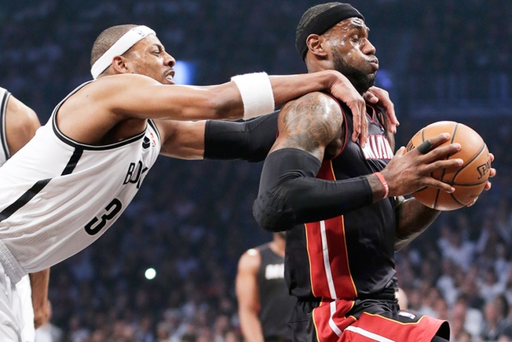

Перші правила гри в баскетбол сформулював американець Джеймс Нейсміт. Вони складалися лише з 13 пунктів. З часом баскетбол змінювався, змін вимагали і правила. Перші міжнародні правила гри прийняті 1932 року на першому конгресі ФІБА, після цього вони багаторазово коректувалися і змінювалися, останні значні зміни внесені 1998 і 2004 року. З 2004 року правила гри залишаються незмінними. Правила гри дещо відрізняються в НБА і чемпіонатах, що проводяться під егідою ФІБА (Чемпіонати світу, Олімпійські ігри, Чемпіонати континентів, міжнародні та національні першості європейських клубів).
В баскетбол грають дві команди, зазвичай по дванадцять осіб (як чоловіки, так і жінки), від кожної з яких на майданчику одночасно діють п'ять гравців. Мета кожної команди в баскетболі — закинути баскетбольний м'яч у кошик суперника і перешкодити іншій команді опанувати м'ячем і закинути його в кошик своєї команди. М'ячем грають тільки руками. Бігти з м'ячем, не ударяючи їм в підлогу, навмисно бити по ньому ногою, блокувати будь-якою частиною ноги або бити по ньому кулаком — порушення. Випадкове ж зіткнення або торкання м'яча стопою або ногою не є порушенням.
Переможцем в баскетболі стає команда, яка після закінчення ігрового часу набрала більшу кількість очок. При рівному рахунку після закінчення основного часу матчу призначається овертайм (зазвичай п'ять хвилин додаткового часу), у разі, якщо і після його закінчення рахунок буде рівним, призначається другий, третій овертайм і т. д., до тих пір, поки не буде виявлений переможець матчу.
За одне влучення м'яча в кільце може бути зарахована різна кількість очок:
Гра офіційно починається спірним кидком в центральному колі, коли м'яч правильно відбитий одним з гравців. Матч складається з чотирьох періодів по десять хвилин (дванадцять хвилин в Національної баскетбольної асоціації) з перервами по дві хвилини. Тривалість перерви між другою і третьою чвертями гри — п'ятнадцять хвилин. Після великої перерви команди повинні помінятися кошиками.
Гра може відбуватися на відкритому майданчику і в залі висотою не менше 7 м. Розмір поля — 28×15 м. Баскетбольні (стритбольні) щит, кільце, опори. Щит розміром 180х105 см від стійки. Від нижнього краю щита до підлоги чи ґрунту повинно бути 275 см. Кошик — це металеве кільце, обтягнуте сіткою без дна. Він кріпиться на відстані 0,31 м від нижнього обріза щита. Баскетбольний м'яч. Встановлена стандартами ФІБА для чоловічих змагань окружність баскетбольного м'яча — 74,9-78 см, маса — 567—650 г (для жіночих відповідно 72,4-73,7 см і 510—567 г).
Фол в баскетболі — недотримання правил, викликане персональним контактом або неспортивною поведінкою. Серед видів фолів є такі як:
Гравець, який отримав 5 фолів (6 фолів у НБА) в матчі повинен покинути ігровий майданчик і не може брати участь у матчі (але при цьому йому дозволяється залишитися на лаві запасних). Гравець, що отримав дискваліфікуючий фол, повинен залишити місце проведення матчу (гравцеві не дозволяється залишитися на лаві запасних).
Тренер дискваліфікується, якщо:
Кожен фол йде в рахунок командних фолів, за винятком технічного фолу, отриманого тренером, офіційною особою команди чи гравцем на лавці запасних.